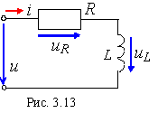

|
 Этот метод используют для анализа простейших схем с одним источником питания и с последовательным или параллельным соединением ограниченного числа пассивных элементов. В качестве примера на рис. 3.13 приведена схема цепи с индуктивным L и резистивным R элементами и источником напряжения u = Umsinωt. При выбранных направлениях тока и напряжений, как показано на рисунке, согласно второму закону Кирхгофа имеем u = uR + uL, где uR = Ri и uL = Ldi/dt - компонентные уравнения элементов R и L. Тогда Решение этого неоднородного дифференциального уравнения первого порядка относительно установившегося тока цепи как функции времени (с парой неизвестных Im и Yi)
находят с помощью векторных диаграмм. - метод переменных состояния. |